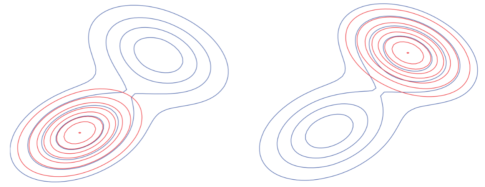
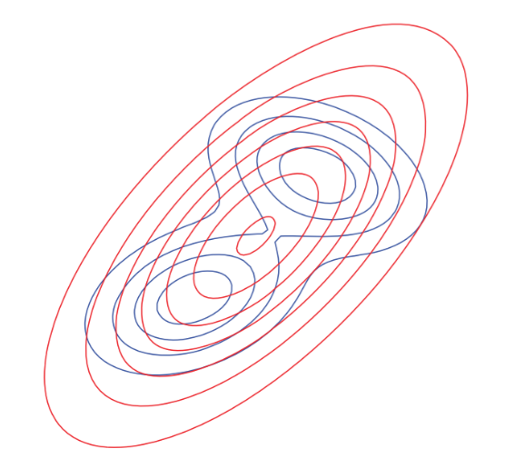

Also called “information gain", is a measure of the difference between two probability distributions P and Q. It is not symmetric and does not obey the triangle inequality, thus is not a true metric.
KL divergence from Q to P:
DKL(P∥Q)=∫p(x)logp(x)q(x)dx=Ep[logp(x)q(x)]
In information theory,
DKL(P∥Q)
- it is the amount of information lost when Q is used to approximate P
- it measures the expected number of extra bits required to code samples from P using a code optimized for Q
Proof for DKL(Q∥P)≥0 (also for DKL(P∥Q)≥0) :
0=log1=log∫p(x)dx=log∫p(x)q(x)q(x)dx≥∫q(x)logp(x)q(x)=Eq[logp(x)q(x)]=−DKL(Q∥P)
Due to Jensen's inequality:
f(E[x])≥E[f(x)], if f is concave
Note that
DKL(Q∥P)=0 iff
q(x)=p(x).
If P represents the "true" distribution of data, observations, or a precisely calculated theoretical distribution, while Q represents a theory, model, description, or approximation of P:
- Optimize KL(Q||P): zero-forcing, underestimate (better choice, get at least local optimum)

- Optimize KL(P||Q): zero-avoiding, overestimate (the output expectation value is not good at all)

Reference
Introduction to variational Bayesian methods: https://www.youtube.com/watch?v=HOkkr4jXQVg
KL Divergence: https://en.wikipedia.org/wiki/Kullback–Leibler_divergence